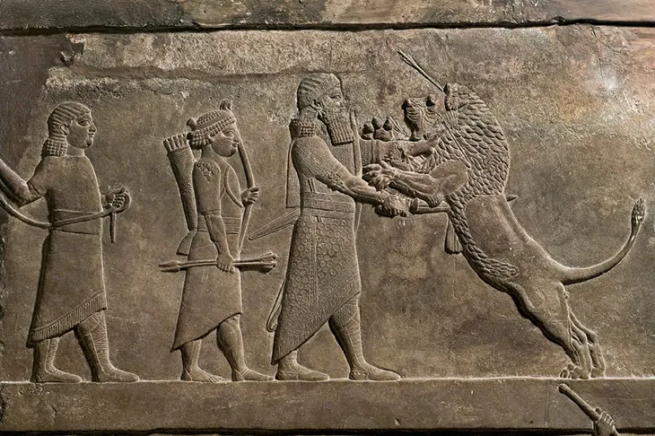

Dimensions: 730×486 pixels
Depth Layers: 5 layers representing relief heights from 1mm to 5mm
Outline Paths: 202 contour paths extracted from edge detection
Purpose: Optimized for 3D printing reliefs on curved surfaces like vases
Format: Each layer group has a data-depth attribute specifying the relief height in millimeters